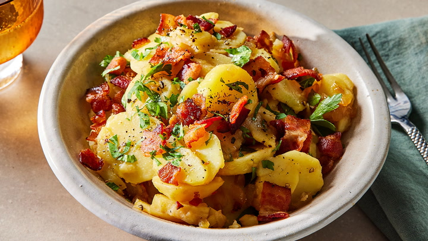

German Potato Salad

Description
The truth is, different regions of Germany have their own distinct styles of potato salad, and what Americans commonly think of as "German Potato Salad" -- as today's recipe -- is most typically associated with the Bavarian region of southern Germany. That being stated, you will encounter different types of potato salad even across Bavaria!
Ingredients
- Potatoes
- Bacon
- Apple cider vinegar
- Sugar
- Dijon mustard
- Salt + pepper
- Garlic
- Fresh parsley
How to craft potatoes studded with pieces of crispy bacon
- Wash some red potatoes and cut any large potatoes in half so that all of the pieces are about the same size. Toss your potatoes in a pot of cold water, bring to a boil, add plenty of salt, and simmer until tender.
- After draining and setting aside your potatoes, you get to start on the most delicious step - frying the bacon! I find that using kitchen shears to snip raw bacon directly into the pot is the easiest method for dicing it. But, of course, you can just chop it with a knife if you prefer. Once the bacon is nice and crispy, remove it to a plate with a slotted spoon.
- While the bacon is cooking, slice your hot potatoes into bite-sized pieces.
- Once the cooked bacon is removed, don't discard that hot bacon grease! Instead, it's going to form your dressing once you stir in the vinegar, mustard, and sugar (feel free to add 1 tablespoon of sugar at a time and then taste in order to achieve your desired sweetness). After allowing the mixture to simmer for a couple of minutes, add the minced garlic and stir until fragrant and just golden.
- Add your sliced potatoes to the hot dressing in the pot.
- Gently stir your potatoes into the sizzling mixture, taking care not to break them up too much. Fold in the cooked, crumbled bacon and the fresh parsley as well, stirring until just combined and coated.